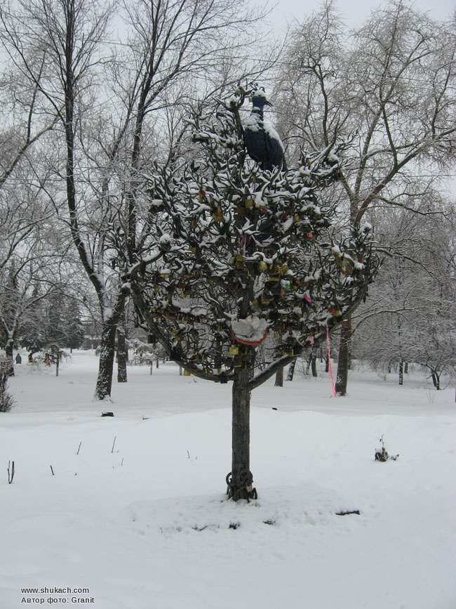
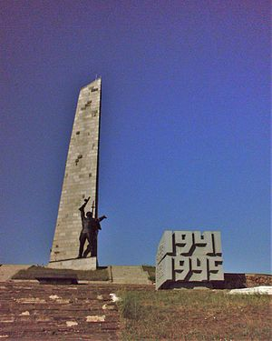

Культура

"Дерево Счастья"
В 2009-м году, в городе Снежное на улице 50 лет СССР, напротив магазина №12 «выросло» кованое "Дерево Счастья". Искусно вырезанные из металла листья, раскидистые ветви настолько вписались в окружающий пейзаж, что с непривычки в первый раз можно принять дерево за настоящее. И лишь два атрибута отличают его от остальных: во-первых, Синяя птица - феникс, так же сработанная из металла, гордо восседающая на верхушке. И во-вторых, ленточки и замочки, которые цепляют на дерево Снежнянские молодожены, ведь с момента установки "Дерево Счастья" пользуется большой популярностью у городской молодежи. Идея выковать деревце принадлежит местному художнику Евгению Щербакову, который больше десятка лет занимается художественной ковкой. А изготовили чудо-дерево в СПД «Щербаковых». Это был подарок городу к 225-и летию

"Саур-Могила"
Курган в Шахтёрском районе, одна из высот Донецкого кряжа (277,9 м). На вершине кургана находились сторожевой казацкий пост, укрепления Миус-фронта. После Великой Отечественной войны на Саур-Могиле был создан мемориальный комплекс. Курган входит в состав регионального ландшафтного парка «Донецкий кряж». В ходе боев в августе 2014 года во время Вооружённого конфликта на востоке Украины мемориальный комплекс был разрушен постоянными обстрелами. В 2022 году мемориальный комплекс был восстановлен и расширен силами Российского военно-исторического общества (РВИО) и Министерства обороны РФ, открытие состоялось 8 сентября 2022 года.